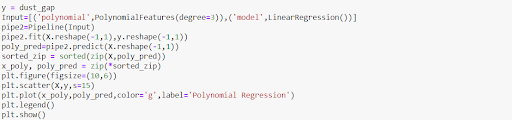
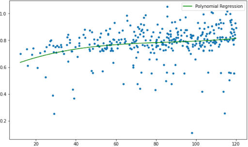
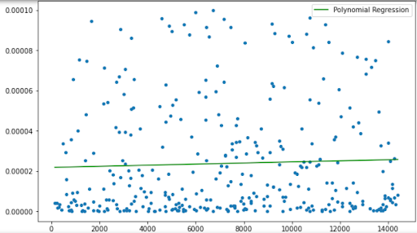

Project as a part of CS460- Machine Learning(2021)
By Anshada P M and Varun Manilal
Project Instructor: Dr.Liton Majumdar
INTRODUCTION
Exoplanet, also called as extra solar planet, refers to planets outside the
solar system. Exoplanets were first detected in 1992. The main methods used
to detect exoplanets are Transit method, Radial Velocity, Microlensing and
Direct imaging. But it has been difficult to detect planets around young
stars with these methods. This is because planet signatures like spectra
are very faint because of very high stellar activity in the young stars
as well as due to the presence of protostellar disks. Hence, we have very
less data about young stars.
So, this is where machine learning comes to use! The Atacama Large Millimeter
Array (ALMA) has taken large quantities of resolved images of protoplanetary
disks (PPD) showing formation of gaps in the disks leading to formation of rings
The formation of these rings can be due to two causes. One because of
disk-specific mechanisms which can be due to a variety of reasons like
condensation of molecular or gravitational instability etc. The second
cause, which is the highlight is that the gaps are due to the interaction
of young planets with the disk around them.
WORKING WITH THE NUMERIC DATA
We are detecting the primary planet in
these disks. We assume that 90% of all protoplanetary disks have embedded planets.
This information is used to refine the FARGO 3D numeric data. The data contains
13 features other than the Planet mass regarding the disk. An example of the data is:
The relationship between different features can be visualized using scatter and
histogram plots. We do not observe any specific patterns other than the fact
that dust gap seems to be localized around some values.
Using Isolation Forest to filter out anomalies in data
To detect anomalies in the data which we assume are protoplanetary disks which do not contain planets we use isolation forest algorithm. We check for anomalies in 7 of the features and we take the contamination value to be 0.1. After filtering out the anomalies the remaining number of datasets is 704. The code used is as follows:
Planet Mass Prediction using Gradient Boosting Regressor
Good Results were achieved for Gradient Boosting Regressor when the number of boosting stages were taken as 100, maximum depth as 8, the minimum number of samples required to split a node was 50, and minimum number of samples at the leaf was taken to be 5. The base code is:
An example of the results is summarized in the table showing the actual and the predicted mass for the cross-validation data.
Planet mass prediction using Multi-Layer Perceptron
Planet mass prediction was tried using multilayer perceptron for various activation functions. Optimizers tried were RMSProp, Adam and SGD. The architecture has two hidden layers with number of nodes 256 and 128. We used the activation function Relu and L2 regularization.
In the case of RMSProp the training error was more than the cross-validation error. Hence the doubt of whether the data is overfit can be avoided. The model was run for 2000 epochs. The training results are:
The other optimizer function which gave good results was SGD. This was run for 600 epochs. The results are:
The error for other models were compared with our model. We have obtained better results than the Lodato and Kanagawa model. This graph shows the variation of error for these models:
Moving on to the Image data
For image processing most of the data was collected from ALMA (primarily DSHARP) and a few other sources. Some of these images were in the form of raw data and had to undergo processing to obtain the final image. Processing of the data was done by NASA’s HEASARC: Software for the raw images. Since the image data was unlabelled, we undertook literature survey to collect data regarding the disks. We had a total of close to 120 images of protostellar disks out of which close to 60 of them were labelled with the planet mass.
 pre-processed image and image after processed
pre-processed image and image after processed
The images obtained from ALMA are observed to be quite blurred due to which the disk substructures are not clearly visible. This can hamper the results. Hence to solve this problem we undertake super resolution techniques to increase the resolution and clarity of the images. For this initially we had planned to implement sparse modelling but later used other two algorithms called BSRGAN and SwinIR. BSRGAN is a degradation model used to synthesize Low Resolution images and SwinIR does image restoration using Swin Transformer.
This is the architecture of SwinIR. SwinIR consists of three parts shallow feature extraction, deep feature extraction and high-quality image reconstruction. The deep feature extraction module is composed of several Swin Transformer blocks (RSTB) and each of this has 6 Swin Transformer layers along with a residual connection.
This is the schematic illustration of the BSRGAN degradation model. BSRGAN is a blind super-resolver which is trained with paired low resolution/high resolution images. In this the degradation sequence is randomly shuffled where Biso , Baniso refers to isotropic and anisotropic Gaussian kernels. Ds is the downsampling operation and N represents different types of noise.
These algorithms were applied for all images. These are the examples:
CNN using ResNet-50
ResNet50 is a variant of ResNet model which has 48 Convolution layers along with 1 MaxPool and 1 Average Pool layer. Using ResNet50 we can train very deep models and still obtain good accuracy. As number of layers increase deep neural networks accuracy saturates and then starts degrading rapidly. This is not due to overfitting as training error also increases. This is rectified by creating a deeper layer which has layers from the shallow model and then identity layers are added to it. This is the architecture of ResNet50 algorithm:
Before running the CNN, all images were converted to a resolution of 128X128 in the RGB format. The initial results from training for 200 epochs using the optimizer function Adam was obtained as:
Prediction of Other Disk Parameters
Another part of the project involved the prediction of other disk parameters from the image of the disk. For this we took up equations from Lodato et al. (2019) and Kanagawa et al. (2016). We have mainly focused on the prediction of viscosity of the disk, the dust gap width and the gas gap.
The equation used in Lodato et al. is an empirical relation to infer planet masses from observed dust gap widths. The equation is:
here wd is the dust gap width, M* is the parent stellar mass and MP is the planet mass.
The other equation is from Kanagawa et al. and is also called as the Kanagawa model. This is a more sophisticated equation and is given by:
where wd is the gas width, h0 is the disk’s local aspect ratio and ⍺ is the viscosity parameter.
To predict the relationship between the planet mass and disk parameters we used polynomial regression. The idea is that when we obtain the planet mass from the CNN-ResNet50 we can find the dust gap, gas width and viscosity based on the predictions offered by these polynomial regressions. For this we use the pre-processed dataset which we had worked on before. The dataset is created using the numeric data used earlier. The general code for these polynomial regressions are:

For gas width the fit is for second order in mass and the fit is obtained as such:
The planet mass is proportional to the cube of the dust gap. The plot gives a good fit.

The viscosity is predicted against planet mass for degree 0.5 and the fit obtained is not too good.

Now to present an example case we take the protostellar disk V883 Orionis. V883 Orionis is a protostar in the constellation of Orion. It is assumed to be a member of the Orion Nebula cluster at 414±7 pc. The true mass of primary planet in the disk is 0.897 Mꙩ . The predicted values are:
Planet Mass Prediction = 1.0698 Mꙩ
Gap Gap = 0.1408
Dust Gap = 0.5715
Viscosity of disk = 0.00466
The predictions for other disk parameters other than Planet mass cannot be confirmed yet as research is ongoing.
RESULTS AND INFERENCES
We are able to predict for Planet mass and properties. The error is due to our attempt to predict Earth sized planets as well as hot Jupiters leading to a very huge range of masses for comparatively a smaller number of dataset.
Proposed Implementations and Ideas
We plan to run the CNN for Planet mass estimation after converting images to grayscale. This can help in faster implementation and we assume that patterns will be better recognised in greyscale (currently being implemented).
Another idea is to train labelled simulation data along with labelled image data to increase the number of training datasets to predict properties of the disk. (Probable implementation using image generation GAN)
This model can be improved if mixed data (numerical/categorical and image data) is available for all protoplanetary disks or if it can be simulated. We believe an MLP-CNN algorithm can better predict other disk properties than what we have presented here.